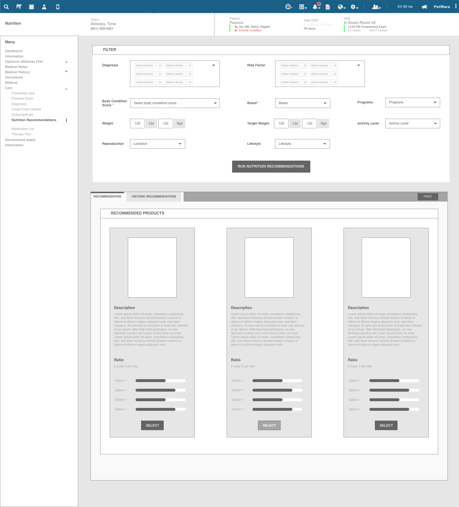
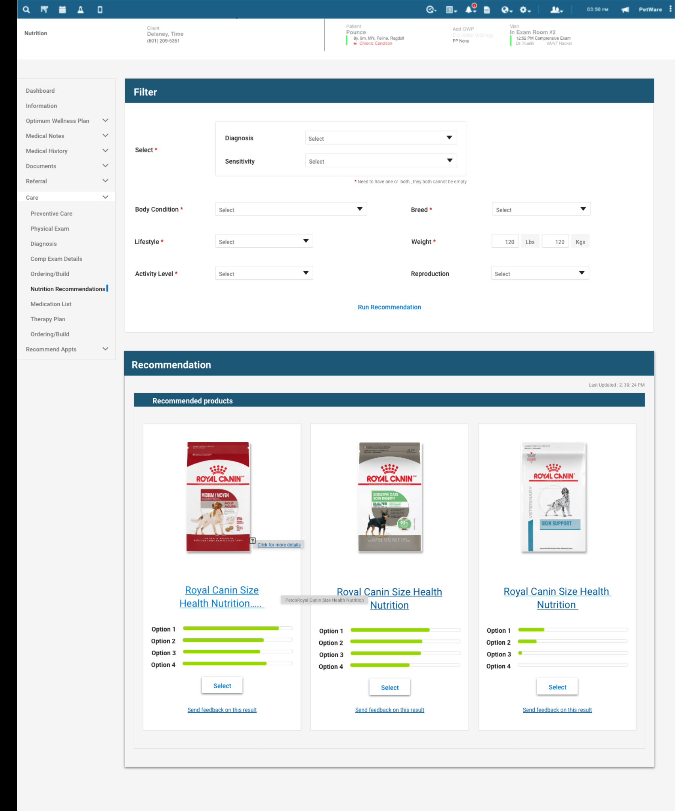
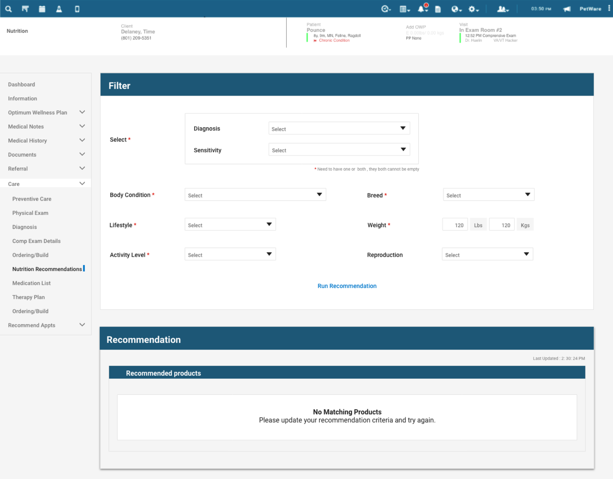
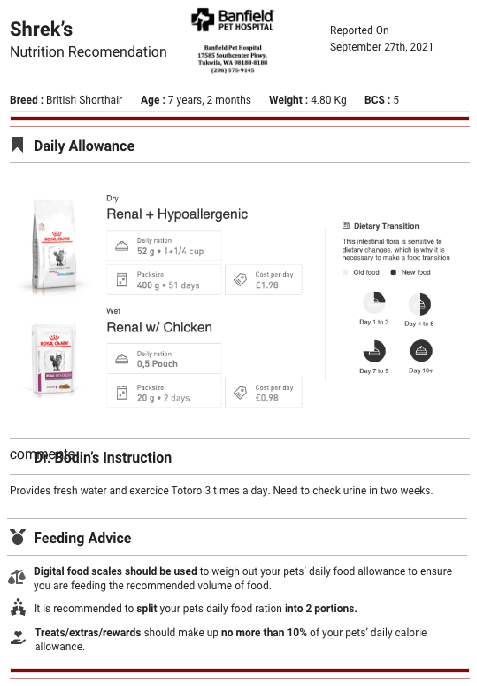
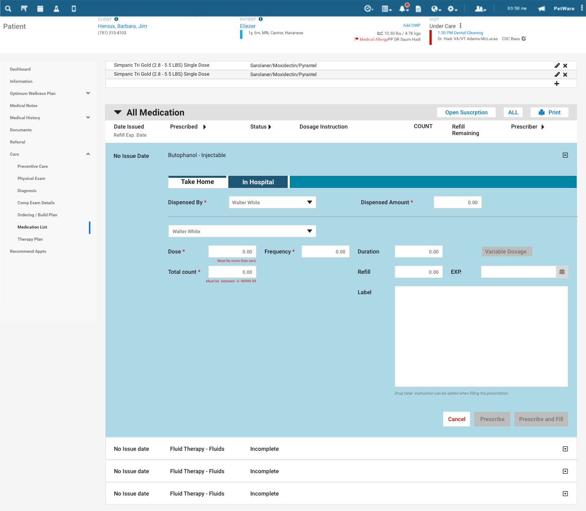
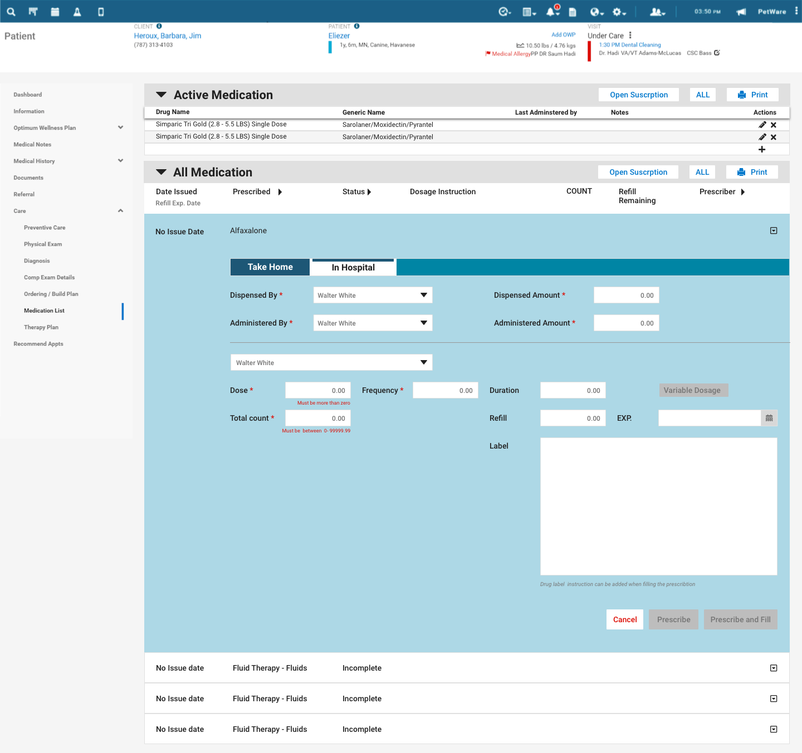
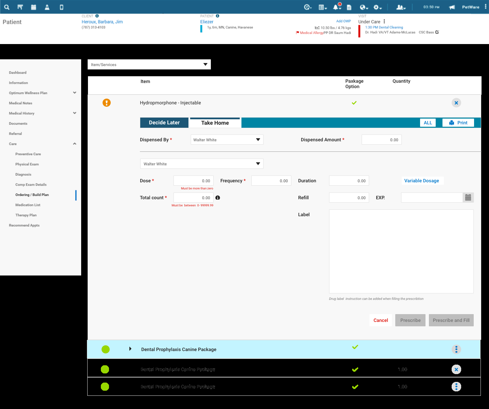

Banfield runs one of the largest networks of veterinary hospitals in the US, and its clinicians work inside a practice-management system that holds the patient, the visit, the medical record, and the orders. I designed two modules within it: a nutrition recommendation flow and a medication and inventory flow, both used live during an appointment, alongside everything else the vet is tracking.
Design clinical decision support that fits inside the existing software, not a separate tool. Smart Reco had to take a patient's clinical inputs and return the best-fit nutrition products with a rationale the vet could trust and explain. The medication flow had to make prescribing, take-home or in-hospital, structured, validated, and fast.
Support the call, don't make it. Give the vet a fast, defensible recommendation and a structured way to prescribe, so the right decision is the easy one and judgment stays with them.
I was a UX designer at Photon, the product studio working with Banfield, and the Smart Reco and Inventory modules were mine to design. I took both from wireframes through high-fidelity screens: the filter-to-recommendation flow, its empty and edge states, the shareable report, and the medication and ordering screens.
As with my later enterprise work, the real discipline was designing inside an existing clinical system, respecting its dense, information-heavy layout and patterns while introducing decision support and structured prescribing the product hadn't had before.
A vet in an exam has minutes, a client in the room, and a patient who can't describe its symptoms. Two decisions come up constantly: what to feed and what to prescribe. Both leaned heavily on memory and disconnected tools. The work was to make them faster and more consistent without adding clicks to an already busy screen.
Recommending the right food meant recalling products across diagnoses, breeds, and conditions from memory. Inconsistent, hard to justify, and easy to get wrong under time pressure.
Even a good recommendation lived only in the vet's head or a quick note. Owners left without a clear plan to follow at home: the food, the daily amount, the transition schedule.
Medication was fragmented across take-home versus in-hospital, dosing, refills, and ordering. Without structure and validation, errors and omissions slipped through.
Smart Reco went through several iterations. I started in low fidelity to settle the hard question first: what does a vet need to enter, and how should three recommendations be presented and compared. Only then did I commit to the visual layer. The structure held; the polish followed.


Two modules, two decisions. Smart Reco answers "what should this animal eat?" from its clinical picture; the inventory and medication flow answers "what am I prescribing, and how does it get dispensed?" Both structured, both inside the practice software.
The vet sets the patient's clinical picture (diagnosis, sensitivity, body condition, breed, lifestyle, weight, activity, reproduction) and runs the recommendation. Smart Reco returns three best-fit nutrition products, each with a match breakdown, so the vet compares and chooses instead of just accepting. It reads as part of the medical record, not a bolted-on calculator.
Why it matters: a memory task becomes a structured, comparable recommendation the vet can stand behind, in seconds.
Decision support has to be honest about its limits. When no product matches the inputs, the screen says "No matching products" and asks the vet to adjust the criteria. I gave the empty and edge states the same attention as the happy path. A tool that can't admit when it has no answer stops being useful.
Why it matters: a clear "no answer" keeps the vet in control and the tool credible.

The recommendation exports to a clean, branded PDF the vet can hand to the owner: the chosen foods, daily allowance, a day-by-day transition schedule, the clinician's instructions, and feeding guidance. The decision leaves the exam room as a plan the owner can actually follow.
Why it matters: the recommendation becomes a take-home plan that helps owners follow through after checkout.

The medication flow keeps each prescription on one record. A Take-Home / In-Hospital toggle changes the context, and inline validation checks the dose, frequency, duration, refills, quantity, dispenser, and printed label before anything gets filled.
Why it matters: structure plus validation turns prescribing from a free-text risk into a checked, repeatable step.


Prescribing connects to ordering: what's needed for the visit rolls into an ordering build plan, so stock and dispensing stay tied to the care actually given instead of being tracked off to the side. It closes the loop from the decision to the supply.
Why it matters: ordering reflects real care, so inventory and dispensing don't drift apart from what was actually prescribed.

The recommendation gives a vet three options and the reasoning, then gets out of the way. Same principle I'd later lean on for AI in financial systems: surface the rationale, keep the human in control.
A clinical tool earns credibility by handling no-match results, validation errors, and take-home versus in-hospital cases clearly.
Settling inputs and the three-up comparison in low fidelity, before any visual polish, is what kept the final screen coherent. Structure before surface.
This was early-career module work inside a large product, not the full research-to-impact arc. It's where the habits the rest of my portfolio is built on started to form.
Banfield taught me how to design for high-stakes, time-pressured work. Give clinicians a fast, defensible recommendation and a structured way to act and keep judgment and responsibility with them. I've carried that principle into every system I've designed since.